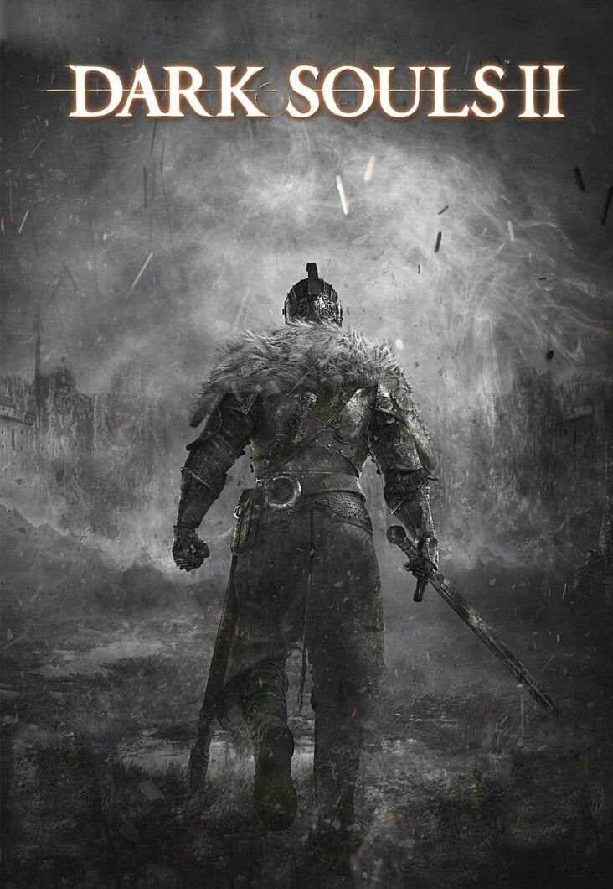

Dark Souls 2 (2014)

Muito depois de Lordran, nomes e reinos mudaram, mas a maldição continua a alcançar aqueles que tentam escapar da morte. Em Drangleic, a busca por uma cura se cruza com a história de um rei que tentou compreender o ciclo — e com as consequências de uma guerra que destruiu seu reino.
1. O ciclo
Entre os acontecimentos do primeiro jogo e a jornada em Drangleic passaram-se eras incontáveis. Reinos foram erguidos sobre ruínas antigas, desapareceram e deram lugar a outros. Lordran já não é uma presença cotidiana; sobrevive em ecos, símbolos e histórias que perderam parte de seu contexto.
A Primeira Chama e a escuridão continuam ligadas ao destino do mundo, mas a repetição não preserva as mesmas pessoas nem os mesmos lugares. Dark Souls II acompanha essa recorrência por meio de novos soberanos e novas terras. O ciclo parece persistir, embora seus mecanismos e seu propósito sejam questionados por quem tenta compreendê-lo.
2. O reino de Drangleic
Drangleic foi um reino poderoso governado por Vendrick, cuja ascensão reuniu territórios e povos sob uma única coroa. Sua prosperidade foi construída também por meio de conquistas e de conhecimentos que ampliaram o poder do reino. Entre as forças que marcaram sua história estavam os Gigantes, vindos do outro lado do mar.
Vendrick conduziu uma guerra contra eles. Os motivos exatos e o primeiro passo do conflito são apresentados em fragmentos, mas a vitória trouxe prisioneiros e recursos que foram usados para fortalecer Drangleic. A guerra, porém, deixou uma hostilidade duradoura e preparou o terreno para a invasão dos Gigantes. O reino que parecia invencível acabou devastado, e seu rei desapareceu de seus salões.
3. Nashandra
Depois de chegar a Drangleic, Nashandra aproximou-se de Vendrick e tornou-se sua rainha. Ela o incentivou a buscar poder e esteve ligada ao conflito com os Gigantes. Sua aparência humana escondia uma natureza associada à escuridão: Nashandra é um fragmento de Manus, o pai do Abismo, cuja essência se dividiu após os acontecimentos de Oolacile.
Nashandra desejava o poder guardado pelo Trono do Desejo. Vendrick, contudo, descobriu a ameaça que ela representava e tomou medidas para impedir que alcançasse seu objetivo. A guerra deixou Drangleic vulnerável; a rainha permaneceu no castelo, à espera de que outra pessoa abrisse o caminho que o rei havia bloqueado.
4. Vendrick, o rei que se afastou
Vendrick foi um conquistador e governante cuja força estava associada às grandes almas que reuniu. Ao lado de seu irmão Aldia, explorou maneiras de ultrapassar os limites da vida e da morte. Seu casamento com Nashandra e sua busca por poder ajudaram a moldar Drangleic, mas também o aproximaram de uma ameaça que ele não compreendeu a tempo.
Quando percebeu a verdadeira natureza e as intenções da rainha, Vendrick levou consigo as almas necessárias para manter o Trono do Desejo fora de seu alcance e se refugiou na Cripta dos Mortos-Vivos. A guerra contra os Gigantes e a ruína do reino consumiram o que restava de seu poder. Quando o Portador da Maldição finalmente o encontra, Vendrick vaga sem consciência na forma de Hollow: a presença física de um rei, mas já sem a lucidez que guiou suas decisões.
5. O Portador da Maldição
O protagonista chega a Drangleic como um morto-vivo em busca de uma maneira de conter a maldição que ameaça apagar sua identidade. Em Majula, uma vila costeira que serve de ponto de retorno, encontra a Emerald Herald. Ela o orienta a buscar o rei e a reunir força suficiente para alcançar o castelo, mas não promete uma cura simples.
Para abrir o caminho até Vendrick, o Portador da Maldição explora regiões distantes e enfrenta antigos soberanos e criaturas que carregam grandes almas. Entre elas estão a Lost Sinner, o Old Iron King, o Rotten e a força que habita Brightstone Cove Tseldora. Esses encontros não são apenas obstáculos: cada um revela o destino de um reino anterior e a persistência de poderes ligados a ciclos passados.
As grandes almas permitem ao protagonista atravessar o caminho até o Castelo de Drangleic. Ali, as ruínas da corte, os experimentos abandonados e os guardiões do reino conduzem à verdade sobre Vendrick e ao Trono do Desejo. A busca por uma cura torna-se uma escolha sobre que lugar ocupar numa história que já se repetiu muitas vezes.
6. Grandes seres e memórias do passado
As memórias dos Gigantes
Ao entrar nas memórias preservadas por árvores gigantes, o protagonista testemunha fragmentos da guerra que devastou Drangleic. O confronto com o Giant Lord revela o custo da campanha de Vendrick e a persistência do rancor dos invasores, sem transformar todos os detalhes da guerra numa narrativa inteiramente conhecida.
Os antigos reis
As terras de Drangleic guardam os vestígios de soberanos que enfrentaram ambição, guerra e ruína. O Old Iron King sucumbiu ao próprio domínio; a Lost Sinner permanece presa ao peso de um crime; e o Rotten reúne restos e almas nas profundezas. Suas histórias ecoam, sem serem cópias exatas, os poderes e fracassos de eras anteriores.
Dragões e outros legados
O legado de Aldia aparece em experimentos e criaturas que desafiam fronteiras entre espécies e formas de vida. Freja, a Duquesa, guarda uma grande alma ligada a Seath; Sinh e a Cidade Afundada mostram outra face dos dragões e dos reinos que tentaram controlá-los. Esses encontros conectam Drangleic a histórias antigas sem eliminar o mistério sobre sua origem.
7. Aldia e a busca por outra resposta
Aldia, irmão de Vendrick, afastou-se da corte para estudar a natureza da vida, dos dragões, da chama e da escuridão. Seus experimentos tentaram romper limites que pareciam inevitáveis, mas produziram seres deformados e um conhecimento incompleto. Ele não é apresentado como alguém que encontrou uma solução definitiva; é uma figura que transformou a dúvida em investigação.
Para Aldia, repetir a escolha entre ligar a chama e aceitar a escuridão significa permanecer preso às opções herdadas de outros. Ele questiona a própria estrutura do ciclo e pergunta se seria possível escapar de seus papéis. Essa possibilidade permanece aberta: o jogo sugere que o Portador da Maldição pode buscar um caminho diferente, mas não demonstra com clareza o que existiria além do fogo e da escuridão.
8. O Trono do Desejo
No castelo, Nashandra revela que aguardava o momento de chegar ao Trono do Desejo. Para confrontá-la, o Portador da Maldição precisa superar os últimos guardiões e a memória do Giant Lord, reunindo a força que Vendrick tentou manter longe da rainha. O confronto expõe a disputa pelo poder, mas não apaga as incertezas sobre a origem e o alcance do ciclo.
Após derrotar Nashandra, o protagonista pode ocupar o Trono e seguir a tradição de tomar para si o destino da chama. Na versão original, também pode deixar o local sem se sentar. Em Scholar of the First Sin, Aldia pode surgir como adversário final e, após vencê-lo, o protagonista pode partir sem reivindicar o Trono. Essa saída não prova que o ciclo acabou: ela representa a recusa em aceitar a escolha nos termos estabelecidos pelos antigos.
9. O significado de Dark Souls 2
Drangleic mostra que o ciclo sobrevive à queda dos reinos e que novas pessoas herdam dilemas antigos. Vendrick tentou impedir que Nashandra tomasse o Trono; Aldia questionou a própria necessidade desse Trono; e o Portador da Maldição pode decidir se aceita ou recusa o papel que lhe foi oferecido. Em Lothric, muito tempo depois, a chama voltará a exigir uma resposta — talvez pela última vez.
Classes iniciais
Guerreiro
Arma inicial: Espada Quebrada e Escudo de Ferro
Armadura: Elmo Padrão e conjunto de Couro Resistente
Começa com força e destreza altas; o escudo ajuda a se defender enquanto troca a espada inicial fraca.
Cavaleiro
Arma inicial: Espada Larga
Armadura: Peitoral, luvas e calças do conjunto Falconer; sem elmo
Tem bastante vida e boa adaptabilidade, mas começa sem escudo e precisa depender das esquivas para se defender.
Espadachim
Arma inicial: Cimitarra +1 e Espada Curta +1
Armadura: Conjunto do Andarilho
Tem a maior destreza inicial e duas armas aprimoradas, favorecendo ataques rápidos e luta com duas mãos.
Bandido
Arma inicial: Machado de Mão e Arco Curto
Armadura: Conjunto de Bandido
Especialista em destreza e arcos, pode alternar entre ataques à distância e golpes próximos com o machado.
Clérigo
Arma inicial: Maça e Sino Sagrado de Clérigo
Armadura: Robe de Arquidraco
Possui fé elevada e começa com milagres que oferecem cura e opções de combate.
Feiticeiro
Arma inicial: Adaga e Cajado de Feiticeiro
Armadura: Nenhuma equipada; o Conjunto Importado fica no inventário
Tem inteligência e sintonia elevadas e começa com feitiços para atacar à distância, mas pouca defesa física.
Explorador
Arma inicial: Adaga
Armadura: Nenhuma equipada; o Conjunto Importado fica no inventário
Não se especializa em combate, mas começa com muitos itens úteis e alta adaptabilidade.
Desprovido
Arma inicial: Nenhuma
Armadura: Nenhuma equipada; o Conjunto Importado fica no inventário
Começa no nível 1, com todos os atributos em 6 e sem arma ou itens equipados.
Chefes mais dificeis do Dark Souls 2
| Chefe |
Local |
Tipo |
| Fume Knight |
Brume Tower |
Humanoide / Cavaleiro |
| Sir Alonne |
Memory of the Old Iron King |
Humanoide / Cavaleiro |
| Darklurker |
Dark Chasm of Old |
Aberração / Ser das Trevas |
| Sinh, the Slumbering Dragon |
Dragon's Rest |
Dragão |
← Voltar ao início